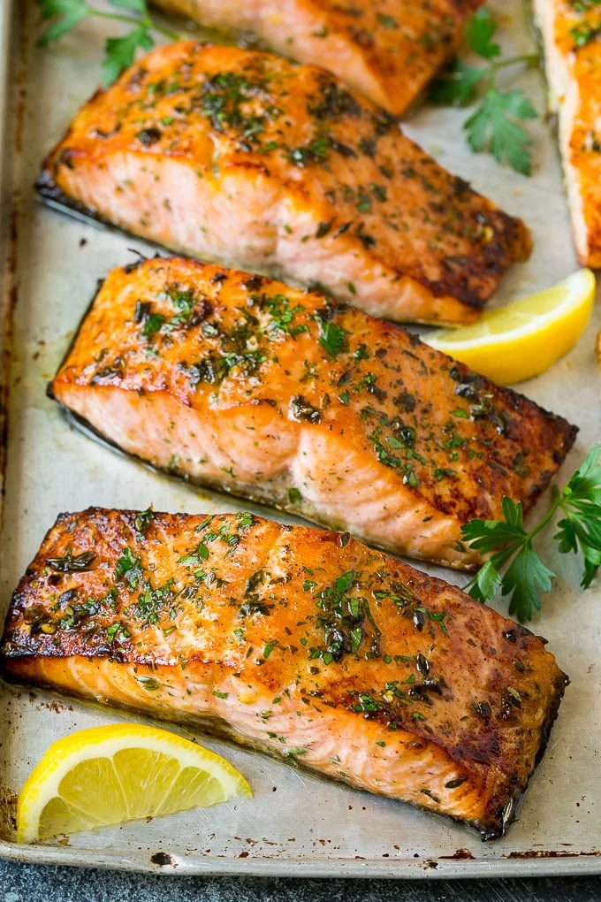

Broiled Salmon Fillets

Description
This recipe for broiled salmon is fresh fish fillets coated in olive oil, garlic and herbs, then broiled until browned. A quick and easy dinner option that's on the table in less than 20 minutes.
Read on to make a delicious meal for dinner guests! Serves 4.
Ingredients
- 4 salmon fillets 4-6 ounces each
- 4 tablespoons olive oil
- 1 1/2 tablespoons brown sugar
- 1 1/2 tablespoons soy sauce
- 1/2 teaspoon lemon zest
- 2 teaspoons lemon juice
- 2 teaspoons chopped fresh parsley plus more for garnish
- 1 1/2 teaspoons fresh thyme leaves
- 1/2 teaspoon salt
- 1/4 teaspoon pepper
- 1 teaspoon minced garlic
- lemon wedges for serving
- cooking spray
Steps
- Preheat the broiler. Coat a sheet pan with cooking spray
- Place the olive oil, brown sugar, soy sauce, lemon zest, lemon juice, parsley, thyme, salt, pepper and garlic in a bowl. Whisk to combine.
- Add the salmon, toss to coat evenly.
- Place the salmon fillets on the prepared sheet pan.
- Broil for 10-15 minutes or until salmon is browned and opaque.
- Garnish with chopped parsley and lemon wedges, then serve.